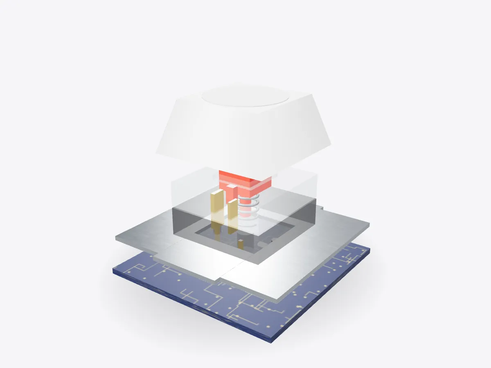

01 / 05
Overview
9 parts, one idea.
See how a mechanical keyboard switch works in 3D: keycap, stem, spring, metal contacts, housing, plate and PCB. Press the key and watch it actuate.
Drag to orbit, pinch or scroll to zoom, tap any part.
How it works · Tech
Every keystroke is a tiny machine at work: a spring, a plastic stem and two strips of metal that touch halfway down.

Scores are saved on this device only.
01 / 05
Overview
See how a mechanical keyboard switch works in 3D: keycap, stem, spring, metal contacts, housing, plate and PCB. Press the key and watch it actuate.
Drag to orbit, pinch or scroll to zoom, tap any part.
02 / 05
Explode
Keep scrolling and every part slides away from the centre, so you can see how they fit together.
03 / 05
Slice
A section plane sweeps through the model as you scroll. Pick an axis and set the depth yourself.
04 / 05
Parts
Pick a part or tap a glowing dot. It lights up and everything else fades back.
05 / 05
Facts
Many switches actuate about halfway through their 4 mm of travel.
QWERTY dates from Christopher Sholes's typewriter patent.
Keys are wired in rows and columns and scanned many times a second.
Explained
A mechanical keyboard has a separate switch under every key. Each one is a small machine with a plastic housing, a sliding stem, a coil spring and a pair of metal contacts. When you press the keycap, the stem slides down against the spring. At the actuation point, the stem's legs move out of the way and one springy metal leaf snaps against the other, closing a circuit. Let go and the spring pushes everything back up.
On many common switches the key actuates at about 2 millimetres, roughly halfway through about 4 millimetres of total travel. Fast typists learn to release the key just after it actuates, without hitting the bottom. The model here is a generic cross-stem switch with no brand markings.
Switches are often sorted into three families. Linear switches feel smooth all the way down; the spring simply gets heavier. Tactile switches have a bump on the stem that you feel just before actuation, which tells your finger the key has registered. Clicky switches add a part that snaps to make an audible click at the same moment. The spring weight, measured in grams of force or centinewtons, changes how heavy each type feels.
The keycap fits onto the stem's cross-shaped mount, so caps can be swapped. The plate holds every switch in a rigid grid, and the material it is made from changes the sound and feel of typing.
A keyboard doesn't wire every key to its own input. The switches sit in a grid of rows and columns on the PCB, and a small controller scans the grid many times a second, powering one row at a time and checking which columns respond. Diodes beside each switch stop phantom keys when several are held at once. The controller also debounces each press, because metal contacts bounce for a few milliseconds before they settle.
The QWERTY layout itself dates from Christopher Latham Sholes's typewriter, patented in 1878. Open Play to press the key yourself and watch the contacts close and the LED light at actuation, then try the 10-second challenge.
D3DDD
D3DDD makes them: product cutaways, exploded views, architectural renders and technical drawings.